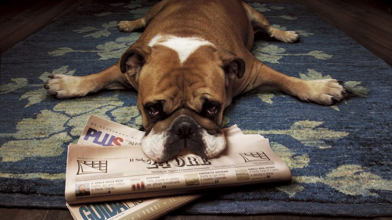
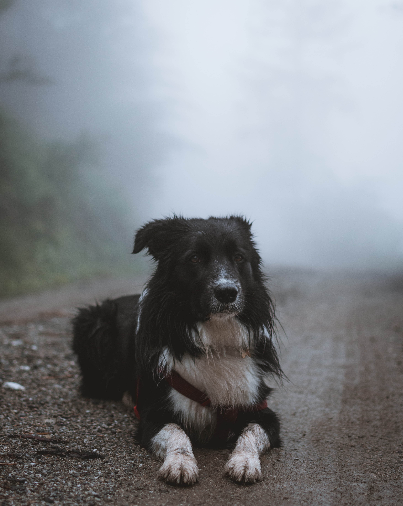
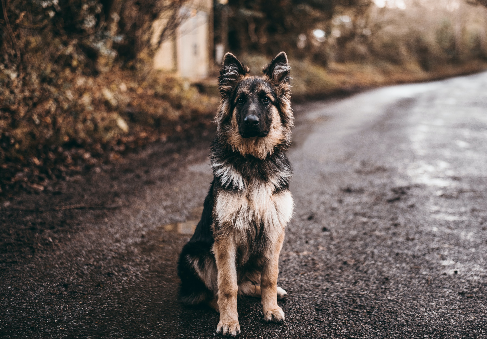
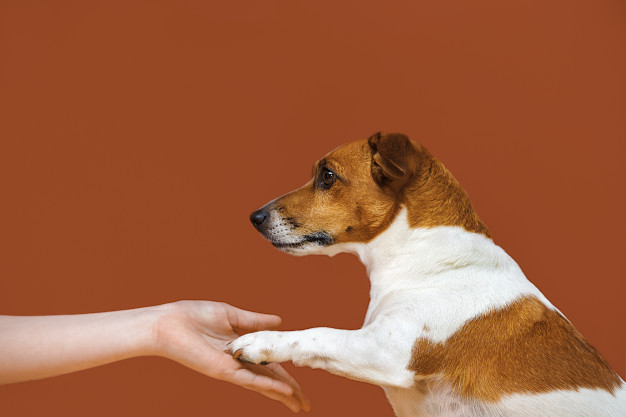

Entrenamiento básico para perros
Los elementos más importantes en el adiestramiento de tu perro son la constancia, la paciencia y la alabanza. No cometas la equivocación de esperar demasiado y demasiado pronto, ya que esto no sería justo para tu mascota.
Ir al baño
Esparce periódicos en un rincón designado como rincón de aseo. Poco tiempo después de que haya comido, llévalo allí y quédate hasta que haya hecho sus necesidades, y después premialo. Llévalo al mismo lugar cuando despierte de su sueño nocturno o de sus siestas.
Saca los papeles sucios y reemplázalos por papeles limpios, dejando encima uno sucio. El olor le recuerda al perro para qué están esos papeles.
Empieza esparciendo los periódicos sobre una gran superficie. Poco a poco reduce la superficie cubierta de papeles hasta que baste con poner varias hojas en el lugar de su elección. Ríñelo cuando cometa un error, y después llévalo a su lugar elegido. En caso de "accidente" no se le debe pegar. Limpia el lugar que ensució con vinagre o amoníaco diluido con agua tibia para eliminar cualquier olor que pudiera atraerlo otra vez al mismo lugar.
Sentado
Muestra una pequeña golosina a tu perro cerca de su nariz (no le permitas cogerla de tu mano) y muévala lentamente hacia sus ojos para que suba la nariz. Su cuerpo debería ir en la posición de sentado naturalmente. Tan pronto como se sienta, dale a tu cachorro la golosina elogiándolo y al mismo tiempo indica la orden verbal 'sit'. Sigue practicando hasta que finalmente no consiga la golosina, con tu sereno elogio.

Abajo
Muestra una pequeña golosina a tu cachorro, muévala lentamente hacia el suelo y ponla entre las patas. Esto debe alentarlos a tumbarse para coger la golosina. Tan pronto como se tumbe, dale a tu cachorro la golosina elogiándolo y al mismo tiempo aplica la orden verbal mismo tiempo 'hacia abajo'. Una vez más, seguir practicando hasta que finalmente no consiga la golosina.
Quieto
Ordena al perro que se siente o eche. Luego dale la orden "Stay". Retrocede lentamente, levantando un dedo para advertirle que no se mueva. Si lo hace, dile "¡No!"" enérgicamente. Deja la correa sobre el suelo, desde él hacia ti, mientras te alejas retrocediendo. Sigue repitiendo "Stay" o "No", según su reacción. Con cada lección trata de retroceder un poco más hasta que quede un espacio libre entre ti y el extremo de la correa.
Da la pata
Con el perro en posición sentada, empújale su hombro derecho con tu mano izquierda. Cuando levante la pata delantera, toma su pata en tu mano derecha, estréchasela, y después prémialo. Sigue repitiéndole la orden "pata" cada vez que realices esta acción.
